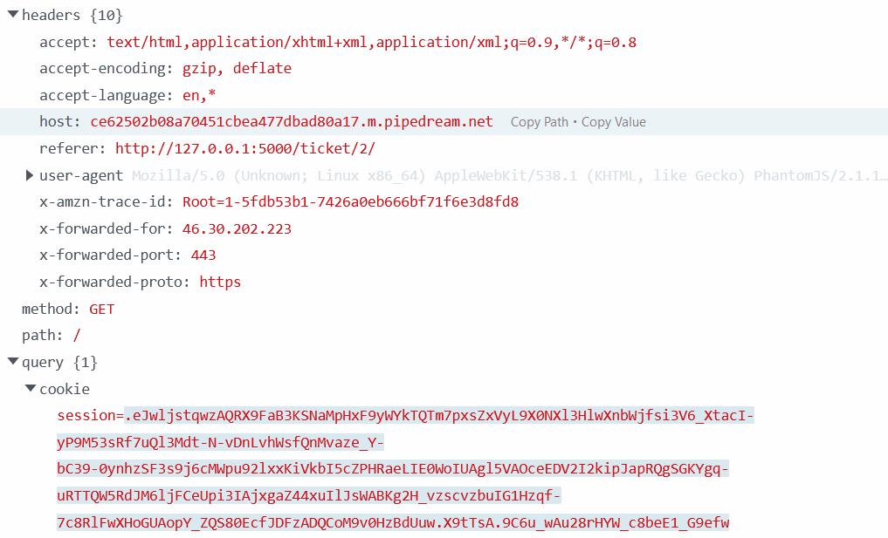
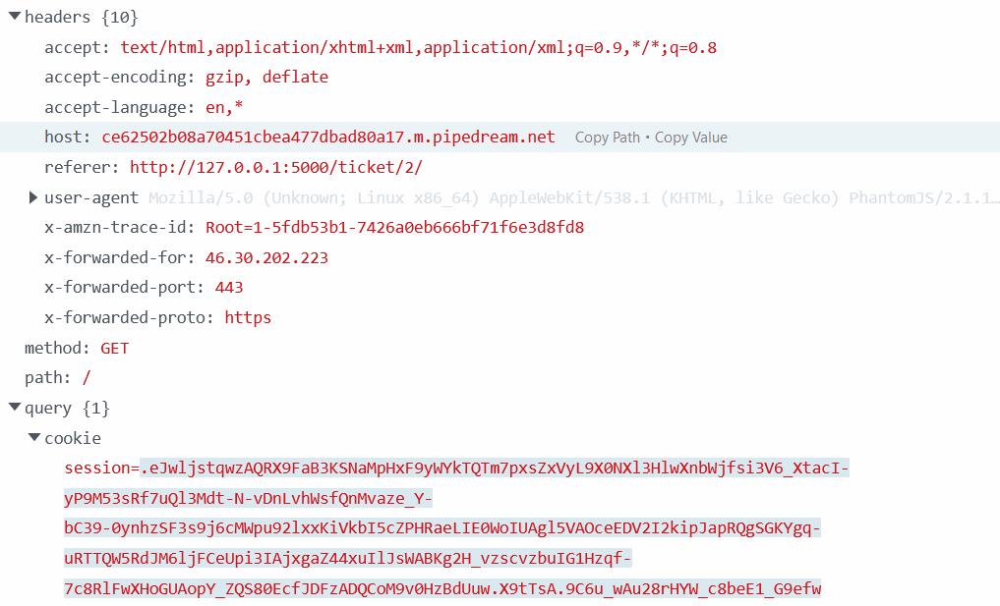

Reaching the page, we are facing a login page.
We can start with some basic SQL injection, admin' OR 'a'='a'#, however it doesn't seem to work. Instead of blocking on that form, we can create an account below and see what we can find inside the website. After creating an account, we reach a page with a form, which is used to contact the support in case of a problem. But instead of asking what is the flag in the message block, we can look for some vulnerabilities. Let's start by checking if the website has a XSS (Cross Site Scripting) vulnerability.
To do so, I'm going to inject some basic JavaScript in the form such as "alert();".
 The website is reacting to the JavaScript that I've putted in the form. Checking the cookie parameter in the Developer Tools, the field "HttpOnly" is set to false. In that case, it allows an attacker to retrieve a user cookie using the JavaScript method "document.cookie".
To find "HttpOnly" parameter, access to the Developer Tools by clicking on F12 then go to storage, find the cookie and in the right panel, you should have the cookie data where you find creation date, domain, HttpOnly...
The website is reacting to the JavaScript that I've putted in the form. Checking the cookie parameter in the Developer Tools, the field "HttpOnly" is set to false. In that case, it allows an attacker to retrieve a user cookie using the JavaScript method "document.cookie".
To find "HttpOnly" parameter, access to the Developer Tools by clicking on F12 then go to storage, find the cookie and in the right panel, you should have the cookie data where you find creation date, domain, HttpOnly...
The scenario is easy here, we know that by submitting a request, it is going to create a ticket, someone from the support will read the ticket, so when this person reach our ticket page, the JavaScript will load and send his cookie to a webserver. Then we'll retrieve his cookie, and set our cookie with his. By doing so, when we'll refresh the page, we are going to be in his session if it is still valid. This is called cookie stealing and session hijacking.
Pipedream is a serverless integration that can receive web request, this is perfect for us, because we just need a server that can log HTTP events on request. Since the field "HttpOnly" is set to false, we can create a GET request to my Pipedream endpoint with a simple JavaScript function document.location, which is going to redirect the user to our pipedream page when he reach the ticket page.
 This script will redirect any person who reach our ticket page to my Pipedream endpoint and set the field cookie with their own cookie thanks to the JavaScript function document.cookie.

On the screenshot above, the field cookie has been filled by the cookie of the user who reach my ticket page. Therefore, copy pasting this value and replacing our cookie with this value should give us access to his session if there is not other security measure.
To replace our cookie, we need to access to the Developement Tools, go to storage, click cookie and paste the value. Once it is done, refresh the page, and see if the session has changed.
Yes! The page content has changed and if you look closely the flag is here as well.
This script will redirect any person who reach our ticket page to my Pipedream endpoint and set the field cookie with their own cookie thanks to the JavaScript function document.cookie.

On the screenshot above, the field cookie has been filled by the cookie of the user who reach my ticket page. Therefore, copy pasting this value and replacing our cookie with this value should give us access to his session if there is not other security measure.
To replace our cookie, we need to access to the Developement Tools, go to storage, click cookie and paste the value. Once it is done, refresh the page, and see if the session has changed.
Yes! The page content has changed and if you look closely the flag is here as well.
Flag: NoUserValidationIsADangerousPractice